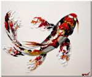

 My family and I immigrated to the United States in 1992 as refugees of the Vietnam War. I’m the second oldest of 4 children. The first few years of living in America was very challenging as there was a language barrier. I recalled starting Kindergarten just knowing one English word, “bathroom”. The realization of the opportunities that this great country offered and the determination to succeed motivated me to graduate with a Bachelor’s in Aviation Management and an Associate Degree in Quality Control. In addition, I also received my private pilot license while attending college.
I am happily married to my beautiful wife, Maylo. My favorite hobby is fishing as I find it very peaceful to be on the water. I enjoy fishing all year round and competing in one of the biggest ice fishing tournaments, Battle on Bago. One of my favorite places to fish during the winter is Sturgeon Bay. I also enjoy playing tennis and hiking.